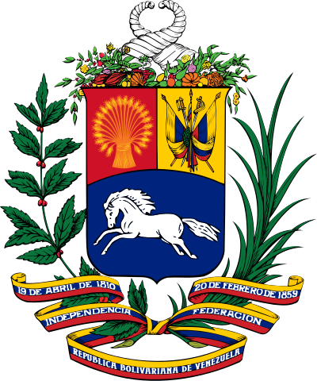

Venezuela March 2019 Powercuts
Cass Python, 2019-03-09Please note that this article will NOT be updated. This article will reflect the views of the time.
Currently a widespread power cut is affecting much of Venezuela, this power outage started on Thursday the 7th of March. This power outage is due to a planned pro- and anti-government protests that will be happening on Saturday. The power cut has been blamed on the President Nicolás Maduro, and that of the United States opposition, who are trying to oust him out. Both parties have blamed each other.
In the capital city of Caracas, supporters of Juan Guaidó have been clashing with the police, and were dispersed with pepper spray.
Mr Guaidó is the current leader of the opposition-controlled National Assembly, he has been recognised as interim president by more than 50 countries, including the United Kingdom, United States, Canada, and most of the EU, while Russia, China, North Korea, and Turkey recognise Maduro. Despite of the recantation, Mr Maduro retains the support of the military, and close allies including Russia and China.
Mr Guaidó declared himself interim president on 23 January and has been at loggerheads with Mr Maduro ever since.
The power cuts have reportedly been caused by problems at a major hydroelectric plant.
Venezuela depends on its vast hydroelectric infrastructure, rather than its oil reserves, for its domestic electricity supply. But decades of underinvestment have damaged the major dams and sporadic blackouts are commonplace.
President Maduro, however, has blamed the outages on "sabotage".
In a defiant tweet early on Saturday he vowed to battle the "brutal aggression against our people", adding: "We will never surrender."
This power outage is not only effecting the WIFI/Internet/WWW, but everyday life; traffic lights no longer work, schools and businesses have been forced to close, families and friends can no longer communicant with each other, and perhaps the worse, hospitals have been effected.
Fourteen of Venezuela's 23 states are still affected by the outages, El Nacional newspaper reported.
References
I. Venezuela buckles under massive power, communications outage
https://www.apnews.com/6ba2f69b77e2457da64593a7b8eced16
https://www.bbc.co.uk/news/world-latin-america-47504722 III. Coat of arms of Venezuela
https://en.wikipedia.org/wiki/File:Coat_of_arms_of_Venezuela.svg IV. Responses to the 2019 Venezuelan presidential crisis
{kind=link}
https://en.wikipedia.org/wiki/Responses_to_the_2019_Venezuelan_presidential_crisis
V. Venezuela power flickers after worst blackout in decades
https://uk.investing.com/news/commodities-news/venezuela-power-flickers-after-worst-blackout-in-decades-1463727
https://www.bbc.co.uk/news/world-latin-america-47510255